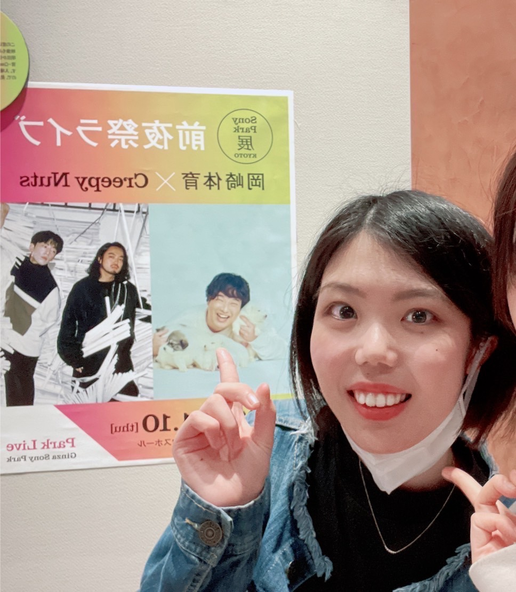
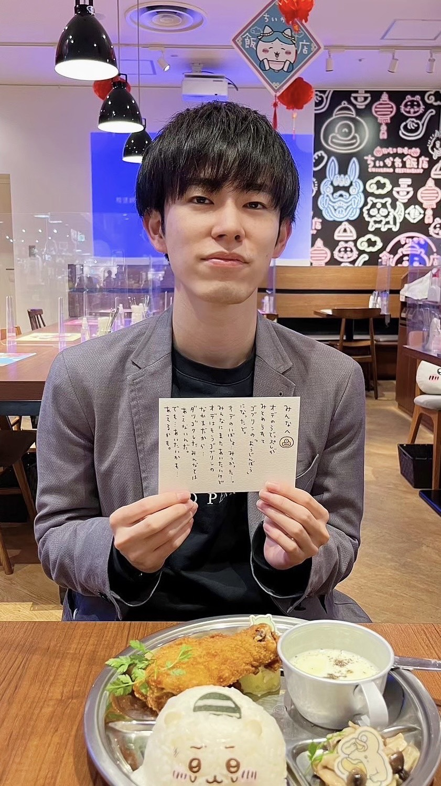
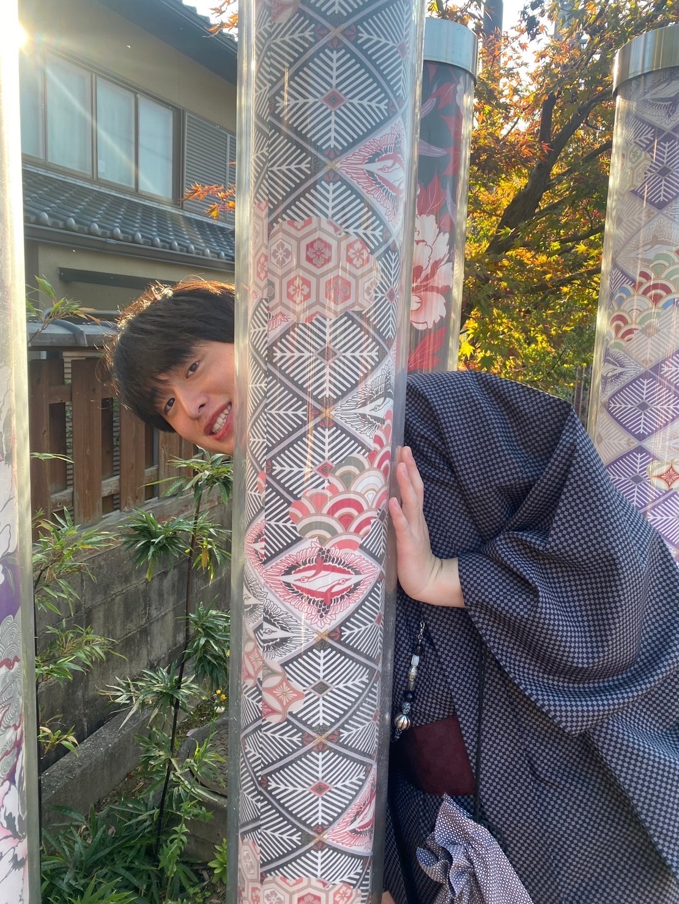
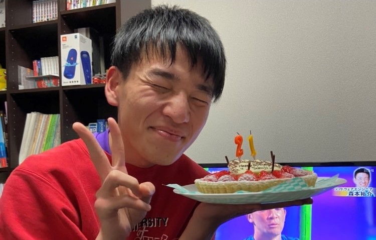
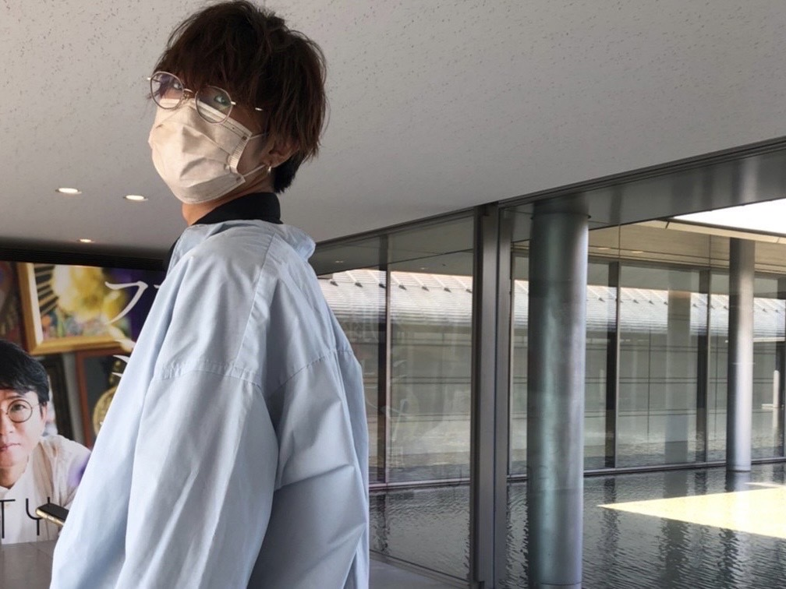

COACH PROFILE
コーチプロフィール
-
- 岡田コーチ
- かわいい
得意科目 さんすう
Coach Okada
-

- 尾崎コーチ
- サッカー好き
得意科目 国語
Coach Ozaki
-
- 狩野コーチ
- 清楚
得意科目 数学・理科
Coach Kano
-

- 小林コーチ
- イケメン
得意科目 数学
Coach Kobayashi
-
- 時田コーチ
- もう言葉はいりません。
得意科目 理系科目・スキー
Coach Tokita
-

- 柳楽コーチ
- やっぱりかわいい
得意科目 現代文・英語
Coach Nagira
-

- 西本コーチ
- かわいい
得意科目 数学
Coach Nishimoto
-

- 廣山コーチ
- もう言葉はいりません。
得意科目 社会
Coach Hiroyama
-
- 松浦コーチ
- やっぱりかわいい
得意科目 地理
Coach Matsuura
-

- 松本コーチ
- かわいい
得意科目 物理
Coach Matsumoto
-
- 南コーチ
- オーストラリアへ留学中
帰ってきて英語しか喋らなくなってるかも
得意科目 英語
Coach Minami
-
- 湯川コーチ
- 生粋のゲラ
普段は温厚だが怒らせると食べられる
得意科目 全部
Coach Yukawa